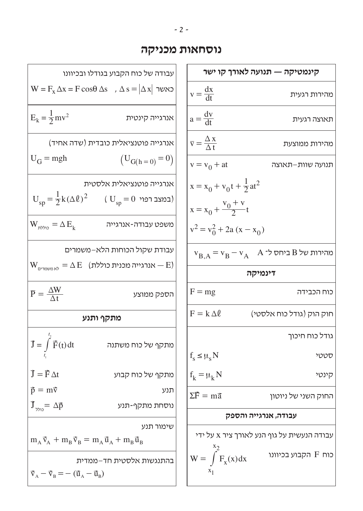

מבנה: 6 שאלות, עונים על 3 בלבד, שעתיים. כל שאלה 36 נק' אך הציון מוגבל ל-100 → "כרית ביטחון" של כ-8 נק'. סיימו את שלוש השאלות במקום להתעכב על אחת.
🆕 בתוך הפתרון המלא — הקישו על ▸ הסבר מההתחלה שליד כל שלב לקבל הסבר בסיסי לגמרי, ועל מילים מסומנותבדיוק כמו זה! הקשה על מילה מסומנת פותחת הסבר קצר. להגדרה מהירה.
📄 דף הנוסחאות — מכניקה
זהו הדף המצורף לבחינה. שווה לדפדף בו מראש כדי לדעת איפה כל נוסחה. כל נוסחה בכרטיסי השיטה למטה מקושרת לכאן. פתח/הורד את הדף המלא (PDF) ←
הצג את עמוד נוסחאות המכניקה

קינמטיקה 4 שאלות מהעבר
🧭 כרטיס שיטה — קינמטיקה
איך מזהים: תנועה בקו ישר, גרף מהירות-זמן (v–t), "תאוצה קבועה/משתנה", חישוב מרחק/זמן.- תאוצה = שיפוע גרף v–t: a = Δv ⁄ Δt
- העתק = השטח שמתחת לגרף v–t.
- משוואות שוות-תאוצה: v = v₀ + at x = x₀ + v₀t + ½at² v² = v₀² + 2a(x − x₀)
- בוחרים משוואה לפי הגודל החסר (אין t → משתמשים ב-v²=v₀²+2aΔx).
🎮 סימולציות אינטראקטיביות — קינמטיקה
- גרף מהירות-זמן (v–t) אינטראקטיבי — בדיוק המיומנות של הבחינה (oPhysics, אנגלית).
- גרפים של מקום, מהירות ותאוצה — לראות איך השלושה קשורים.
- מאגר סימולציות PhET בעברית (משרד החינוך).
שתי מכוניות על כביש ישר
שתי מכוניות, א' ו-ב', נעות על כביש ישר. ברגע t=0 שתיהן בנקודה x=0. הגרף מתאר את מהירויותיהן מ-t=0 עד t=10s. הכיוון ימינה מוגדר חיובי.
א. חשבו את התאוצה (גודל וכיוון) של כל מכונית ב-0<t<10s. (8 נק')
ב. ברגע t=10s: (1) אותו כיוון? (2) המרחק של א' מ-x=0 גדול/קטן/שווה לזה של ב'? נמקו. (6 נק')
ג. אחרי t=10s א' המשיכה באותה תאוצה עד שעצרה בתחנת אוטובוס. (1) מרחק התחנה מ-x=0? (2) משך הזמן מ-t=0 עד שהגיעה? (8 נק')
ד. ברגע t=10s ב' החלה להאט בתאוצה קבועה עד שעצרה באותה תחנה. כמה זמן עבר מהרגע שעצרה א' עד שעצרה ב'? (7 נק')
ה. התקן בתחתית ב' שיחרר טיפת צבע בהפרשי זמן קבועים. איזה מהאיורים 1–4 מתאר את עקבות הטיפות? (4⅓ נק')
💡 רמז
תאוצה = שיפוע הגרף (שימו לב לסימן). מרחק/העתק = שטח מתחת לקו (טרפז/משולש). בסעיף ה': מרווח בין הטיפות ∝ מהירות רגעית.🧭 שיטה
✅ פתרון מלא
לכל שלב יש כפתור ▸ הסבר מההתחלה — הקישו עליו אם משהו לא ברור.
דינמיקה 5 שאלות מהעבר
🧭 כרטיס שיטה — דינמיקה
- שרטטו תרשים כוחות (גוף חופשי) לכל גוף.
- בחרו צירים (לאורך התנועה / לאורך המישור).
- רשמו ΣF = ma לכל ציר ופתרו.
- חיכוך: fₛ ≤ μₛN · f_k = μ_k N.
🎮 סימולציות אינטראקטיביות — דינמיקה (עברית)
| שנה | ש' | תיאור |
|---|---|---|
| 2021 | 2 | מערכת גלגלת A,B לתקרה — תרשימי כוחות, מתיחויות, תאוצה |
| 2022 | 2 | תיבה עם משקל תלוי ואז מישור משופע — יחס מתיחויות, זווית |
| 2023 | 2 | A,B קשורים, A נמשך בכוח F₁ — גרף מתיחות-זמן |
| 2024 | 2 | תיבה נמשכת מעל גלגלת — מסה וחיכוך מגרף a מול F |
| 2025 | 2 | גוף על מישור בזווית משתנה עם חיכוך — זווית סף, מהירות |
תנועה מעגלית 4 שאלות מהעבר
🧭 כרטיס שיטה — תנועה מעגלית
- תאוצה צנטריפטלית לכיוון המרכז: a_R = v²/r = ω²r.
- שקול הכוחות לכיוון המרכז = m·v²/r.
- קשרים: ω=2πf=2π/T · v=ωr.
- מעגל אנכי: בנקודה העליונה mg+N = mv²/r (מהירות מינ' כש-N=0).
🎮 סימולציות אינטראקטיביות — תנועה מעגלית
- מטוטלת חרוטית (Conical Pendulum) — בדיוק כמו שאלות 2024/2025 (כדור על חוט במעגל אופקי).
- מאגר סימולציות PhET בעברית.
| שנה | ש' | תיאור |
|---|---|---|
| 2022 | 3 | גוף על שולחן מסתובב + סלסלה תלויה — תדירות, חיכוך |
| 2023 | 4 | כדור על מסילת מעגל אנכי — כוח חיישן מול גובה, מציאת R |
| 2024 | 3 | מסה על חוט ממוט מסתובב — מתיחות, תדירות, תדירות מרבית |
| 2025 | 3 | כדור על שני חוטים, מעגל אופקי — מתיחויות, תדירות |
עבודה ואנרגיה 3 ראשיות + מופיע ברוב השאלות
🧭 כרטיס שיטה — עבודה ואנרגיה
- משפט עבודה-אנרגיה: W_כולל = ΔE_k.
- שימור אנרגיה מכנית (ללא חיכוך): E_k+U = const.
- כוחות לא-משמרים: W_לא-משמרים = ΔE.
- אנרגיה אלסטית ½kx² · הספק P=W/t · נצילות.
🎮 סימולציה אינטראקטיבית — אנרגיה (עברית)
| שנה | ש' | תיאור |
|---|---|---|
| 2021 | 4 | מישור משופע + מסלול מחוספס — עבודת כוחות, חיכוך מגרף E_k-x |
| 2022 | 4 | גוף על מסלול עם התנגשות אלסטית — עבודת חיכוך, גובה אחרי n מעברים |
| 2024 | 5 | גרף F(x) על משטח מחוספס — עבודה, נקודת עצירה, כוח בזווית |
מתקף ותנע 5 שאלות מהעבר
🧭 כרטיס שיטה — מתקף ותנע
- מתקף = שטח מתחת לגרף כוח-זמן = שינוי התנע: J = ΣFΔt = Δp.
- שימור תנע (חד-ממדי): m_A v_A + m_B v_B = m_A u_A + m_B u_B.
- התנגשות אלסטית: גם שימור אנרגיה; v_A − v_B = −(u_A − u_B).
🎮 סימולציה אינטראקטיבית — התנגשויות (עברית)
| שנה | ש' | תיאור |
|---|---|---|
| 2021 | 5 | התנגשות אלסטית של עגלות — מתקף כשטח מתחת לגרף F-t |
| 2022 | 5 | זריקה אנכית + ריבאונד + התנגשות אלסטית — מתקף, עבודה |
| 2023 | 5 | מישור→משטח מחוספס→התנגשות אלסטית — השוואת מתקפים |
| 2024 | 4 | שתי תיבות מתנגשות — מתקף, כוח ממוצע, מתקפים שווים |
| 2025 | 4 | קפיץ דחוס משחרר A,B — מערכת סגורה, התנגשות אלסטית עם C |
📚 עוד מקורות טובים (פתרונות וקורסים)
- המרכז להוראת הפיזיקה — מכון ויצמן: בגרויות, פתרונות ותובנות.
- פתרונות בגרות — יואל גבע.
- קמפוס IL: קורסי הכנה חינמיים של משרד החינוך.
- מאגר PhET בעברית — משרד החינוך.